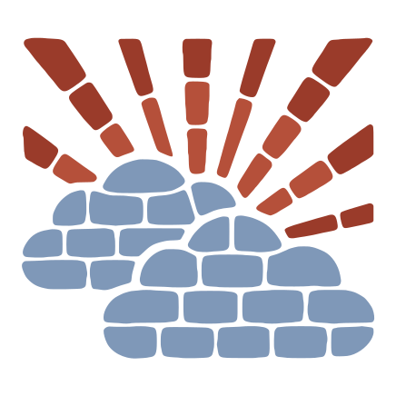
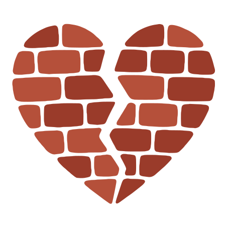
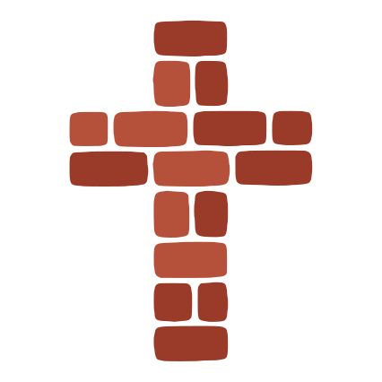

The good news
The whole story in four stones. Pastor Jacob would write these in his own words.

OneGod made us to know him and be known by him.

TwoEvery one of us has turned away, and sin separates us from him.

ThreeHe lived the life we could not, died on the cross for us and rose on the third day.
Anyone who turns and trusts him is forgiven and welcomed into God's family for good.
The good news
God made us to know him, but every one of us has turned away, and that sin separates us from him. Jesus, God's own Son, lived the life we could not, died on the cross in our place and rose again on the third day. Anyone who turns from sin and trusts him is forgiven, made new and welcomed into God's family for good.
Read more in What we believeThe good news